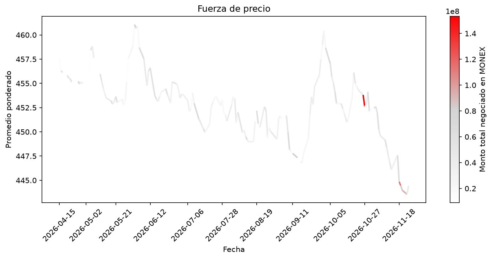
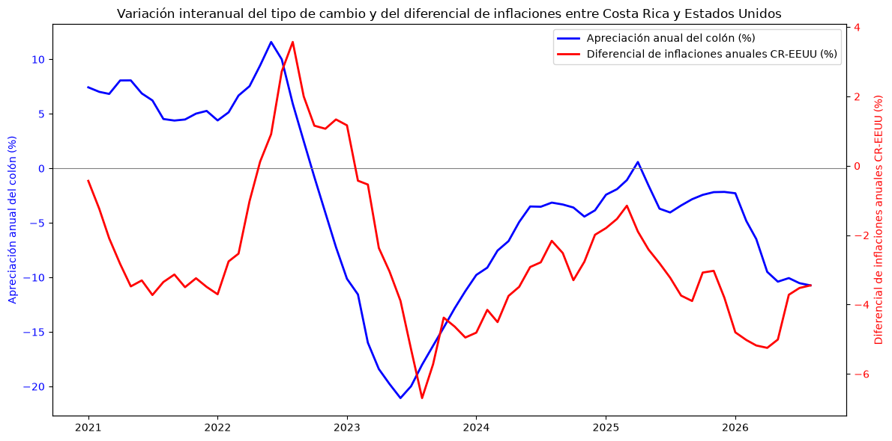
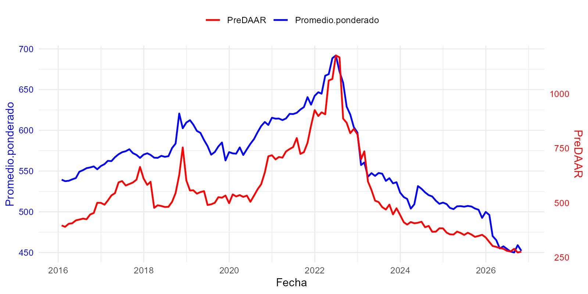

El color de la línea representa el monto total negociado en MONEX. El rojo indica mayores montos transados en la sesión de MONEX del día al que corresponde el precio. Los grises indican menores montos. En la actual tendencia a la baja del precio, las caídas de precio tienden a ocurrir con altos montos transados mientras que las subidas tienden a ocurrir con bajos montos. Una interpretación es que los comerciantes de divisas no apoyan con sus transacciones subidas de precio, no parecen creer que una subida en precio signifique el inicio de una tendencia alcista; en cambio, parecen asustarse cuando el precio cae y transan mucho, quizá en la creencia de que la caída puntual anuncia una tendencia bajista a futuro.

La hipótesis de la paridad de poder de compra (ecuación de Fisher) indica que la depreciación tiende a ser igual al diferencial de inflaciones. El gráfico muestra que para el tipo de cambio del dólar en términos de colones esto se cumple.

El BCCR tiene activos en monedas extranjera (reservas) y pasivos en esa moneda. Si restamos los segundos de los primeros queda algo así como el patrimonio del BCCR en moneda extranjera; es decir, las reservas monetarias internacionales netas de psasivos en moneda extranjera (como los depositos del Ministerio de Hacienda en el BCCR). Al dividir los pasivos monetarios (que se entiende que son en colones y conforman la base monetaria) entre el patrimonio en moneda extranjera se obtiene el tipo de cambio al cual el BCCR podría exactamente cambiar todos sus pasivos monetarios en colones por su patrimonio en moneda extranjera. Este tipo de cambio es el precio del dólar que apenas agota reservas (PreDAAR). El gráfico presenta el PreDAAR (en el eje derecho) contra el tipo de cambio en MONEX. Nótese que al 31 de octubre de 2026 el PreDAAR era de 276.93 colones.